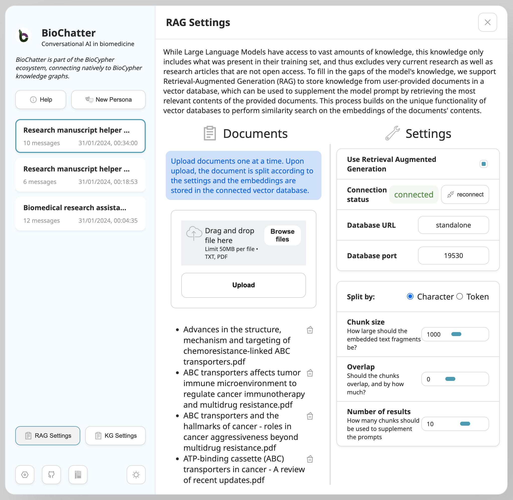
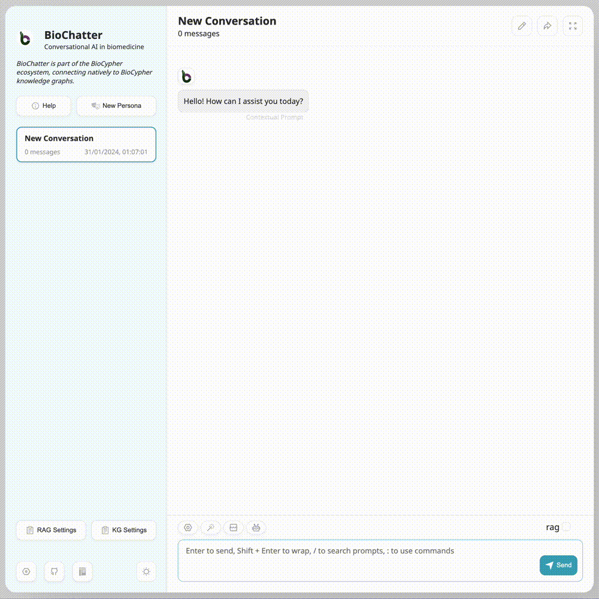

Vignette: Retrieval-Augmented Generation (RAG)
This vignette demonstrates the RAG module of BioChatter as used by the BioChatter Next application. This basic use case involves an LLM manuscript reading assistant and a vector database with embedded scientific manuscripts. The manuscripts are recent reviews on the topic of ABC transporters (active transport proteins that often serve as efflux pumps in many tissues, with a major function of clearing exogenous substances) in drug resistance phenomena, which we currently investigate in our DECIDER cohort. Manuscripts such as these can be absent from the knowledge base of LLMs for various reasons, such as their recency or the fact that they are not open access. RAG opens up the possibility to retrieve relevant information from these manuscripts, and to inject it into the LLM's generation process.
Usage
In BioChatter Next, we first activate the RAG functionality by clicking on the
RAG Settings button in the sidebar. In the settings dialog, we can activate
the functionality and upload an arbitrary number of documents, which is only
limited by the scale of the vector database system. In this case, and for
demonstration purposes, we uploaded the four manuscripts, which leads to the
state shown in the screenshot below. You can find the citations below.

Note that we chose to split the documents into fragments of 1000 characters each. We could have split by tokens instead, or changed the fragment length and overlap. Fragment length, overlap, and splitting by tokens or characters are decisions that should be made in tandem with the choice of LLM model, and with the number of fragments that should be retrieved for each query. Most importantly, the total text length should not exceed the input context length of the model. Here, we choose to inject 10 fragments per query.
We can now start a new conversation (using the New Persona button in the
sidebar), for which we select the Research manuscript helper (RAG) persona,
which includes suitable contextual prompts. Upon activating the RAG in the chat
(to signal that we wish to perform RAG for our question), we can enter into a
dialogue with the assistant. We use gpt-3.5-turbo-0613 in this example
(deprecated as of July 16 2024), which is a very affordable model. The procedure
is demonstrated in the GIF below.

Comparison with ChatGPT
We can ask the same question to ChatGPT 4 (only subscription access). By
employing web search, ChatGPT 4 is able to find the same study that was the RAG
result we were asked about in our follow-up question (Xu et al. 2015); however,
the answer is not as detailed as the answer provided by the RAG process, and
includes fewer mentions of explicit studies. While it includes sensible
information, there is no way of validating most of the claims made by the model.
You can read the full answer
here.
Overall, the quality of ChatGPT 4 is comparable to the RAG output, but the user
has less control over the knowledge used, and the answer cannot include
information that is not easily found on the web (for instance due to access
restrictions). Of note, we used gpt-3.5-turbo-0613 in this example, which is
less recent and much less expensive than GPT-4.
Asking the naive ChatGPT 3.5 (free access), the same question yields a very different answer. The free version of ChatGPT cannot search the internet, and does not provide any citations for the general answer it provides. You can read the full answer here. For convenience, all three conversations are copied below.
Conclusion
In conclusion, the RAG procedure we implement is able to dramatically improve the quality of GPT-3 answers, making them comparable to GPT-4 with web search, and even surpassing it in some aspects. We invite you to try it out yourself, as we provide an instance of BioChatter Next, including GPT access and a vector database instance, free of charge at https://next.biochatter.org.
Conversations
BioChatter RAG
Contextual Prompt
You are an assistant to a biomedical researcher.
Contextual Prompt
You have access to text fragments from one or multiple scientific manuscripts, which were retrieved by their semantic similarity to the user's question.
Contextual Prompt
Your task is to help the user understand the manuscripts and their relevance to their questions. Be concise in your explanations, provide quotes from the manuscripts where appropriate, and be open about limitations in cases where the text does not contain pertinent information.
Message From You
What is known about the CFTR protein in resistance to ovarian cancer?
Message From BioChatter
Based on the provided information, there are several studies that suggest a potential role of the CFTR (Cystic Fibrosis Transmembrane Conductance Regulator) protein in resistance to ovarian cancer. Here are some key findings from the referenced manuscripts:
-
Gene expression profiling of ovarian tumors before and after chemotherapy revealed molecular signatures of chemoresistant tumors (M, et al., 2006). This study did not specifically mention CFTR, but it provides insights into the molecular changes associated with chemoresistance.
-
ABCF2 expression, which is related to CFTR, was investigated in clear cell adenocarcinoma of the ovary. The study found a relationship between ABCF2 expression and response to chemotherapy or prognosis (Tsuda H, et al., 2010).
-
Alterations in gene copy numbers, including CFTR, were identified as a mechanism for acquired drug resistance in cancer (Yasui K, et al., 2004).
-
ABCF2, an Nrf2 target gene related to CFTR, was found to contribute to cisplatin resistance in ovarian cancer cells (Bao L, et al., 2017).
-
CFTR was not specifically mentioned in the context of ovarian cancer, but a study on hepatocellular carcinoma found that silencing circ-TCF4.85 inhibited cancer progression through microRNA-486-5p-targeted inhibition of ABCF2 (Gao J, et al., 2020).
-
Constitutive activation of nuclear factor κB (NF-κB) was associated with CFTR expression and promoted cancer progression and poor prognosis in cervical cancer (Wu Z, et al., 2013).
-
High levels of CFTR expression were associated with tumor aggression in ovarian cancer, and knockdown of CFTR suppressed ovarian cancer cell proliferation (Xu J, et al., 2015).
It is important to note that while these studies suggest a potential association between CFTR and resistance to ovarian cancer, the exact mechanisms and clinical implications are still being investigated. Further research is needed to fully understand the role of CFTR in ovarian cancer resistance.
Message From You
Tell me more about the studies of aggression and knockdown of CFTR in vivo.
Message From BioChatter
Based on the provided information, there are two relevant studies regarding the aggression and knockdown of CFTR in ovarian cancer:
-
The study by Wu et al. (2013) investigated the constitutive activation of nuclear factor κB (NF-κB) and its contribution to CFTR expression, cancer progression, and poor prognosis in cervical cancer. Although this study is not specific to ovarian cancer, it provides insights into the role of CFTR and NF-κB in promoting cancer progression.
-
The study by Xu et al. (2015) focused specifically on ovarian cancer and found that high levels of CFTR expression were associated with tumor aggression. They also demonstrated that knockdown of CFTR suppressed the proliferation of ovarian cancer cells in vitro and in vivo. This study suggests that CFTR may play a role in promoting ovarian cancer growth.
These studies provide evidence for the involvement of CFTR in cancer aggression and suggest that targeting CFTR could be a potential therapeutic strategy. However, it is important to note that these studies focus on different types of cancer (cervical and ovarian), and the specific mechanisms underlying CFTR's role in ovarian cancer aggression and its knockdown effects are not fully elucidated.
It is worth mentioning that the other references provided in the text fragments are not directly related to the aggression and knockdown of CFTR in ovarian cancer. They discuss topics such as the structure and function of ABC transporters, drug resistance, and inflammation in different contexts.
ChatGPT 4
Anonymous
What is known about the CFTR protein in resistance to ovarian cancer?
ChatGPT
The CFTR protein, known as the cystic fibrosis transmembrane conductance regulator, plays a significant role in ovarian cancer. Research has shown that CFTR is expressed more in ovarian cancer tissues compared to benign ovarian tumors and normal ovaries. This overexpression of CFTR is associated with more advanced stages of ovarian cancer, poor histopathological grade, and higher serum Ca-125 levels, which are all markers of more aggressive disease. Interestingly, the serous type of ovarian cancer shows stronger CFTR staining compared to other types.
Moreover, the role of CFTR extends beyond its traditional function as an ion channel. It interacts with various intracellular signaling pathways that are crucial in cancer progression. For example, in ovarian cancer, CFTR overexpression is linked to interactions with the c-Src signaling pathway, which is involved in cellular growth.
The implications of CFTR expression in ovarian cancer are significant. In studies where CFTR was downregulated, there was a decrease in cell invasion, migration, proliferation, adhesion, and colony formation in vitro. In vivo experiments also showed that the tumorigenic abilities of ovarian cancer cells were significantly repressed when CFTR expression was reduced.
These findings highlight the complex role of CFTR in ovarian cancer and suggest that it could be a potential target for therapeutic intervention. However, it is important to note that the role of CFTR in cancer is multifaceted and varies among different types of cancers. Therefore, a detailed understanding of its function in specific cancer types, like ovarian cancer, is crucial for developing targeted treatments (https://pubmed.ncbi.nlm.nih.gov/25738998/, https://jmhg.springeropen.com/articles/10.1186/s43042-022-00308-7).
ChatGPT 3.5
Anonymous
What is known about the CFTR protein in resistance to ovarian cancer?
ChatGPT
As of my last knowledge update in January 2022, there is limited direct information about the CFTR (Cystic Fibrosis Transmembrane Conductance Regulator) protein's role in resistance to ovarian cancer. CFTR is primarily associated with cystic fibrosis, a genetic disorder that affects the lungs and other organs. However, some research suggests potential links between CFTR and cancer, including ovarian cancer, although the mechanisms are not fully understood.
Here are some key points to consider:
CFTR Expression: Studies have shown that CFTR is expressed in various tissues, including the female reproductive system. Abnormal CFTR expression or function could potentially impact the development or progression of ovarian cancer. Research is ongoing to understand the role of CFTR in cancer biology. CFTR Mutations: Certain mutations in the CFTR gene have been associated with an increased risk of cancer, although the evidence for ovarian cancer specifically is limited. Mutations in CFTR are more commonly known for their role in cystic fibrosis. Individuals with cystic fibrosis have an increased risk of various cancers, including gastrointestinal cancers, but the link to ovarian cancer is not well-established. Ion Transport and Cancer: CFTR is involved in ion transport across cell membranes, and this function could potentially influence cellular processes relevant to cancer. Changes in ion transport can affect cell proliferation, apoptosis, and other cellular functions that are important in cancer development and progression. Potential Therapeutic Target: Some research suggests that modulating CFTR activity or expression could be a potential target for cancer therapy, including ovarian cancer. However, more research is needed to determine the feasibility and effectiveness of such approaches. It's important to note that the understanding of the role of CFTR in cancer, including ovarian cancer, is an evolving field, and new research findings may have emerged since my last update in January 2022. To get the most up-to-date information on this topic, I recommend consulting recent scientific literature and speaking with medical experts or researchers actively working in the field of ovarian cancer and CFTR biology.